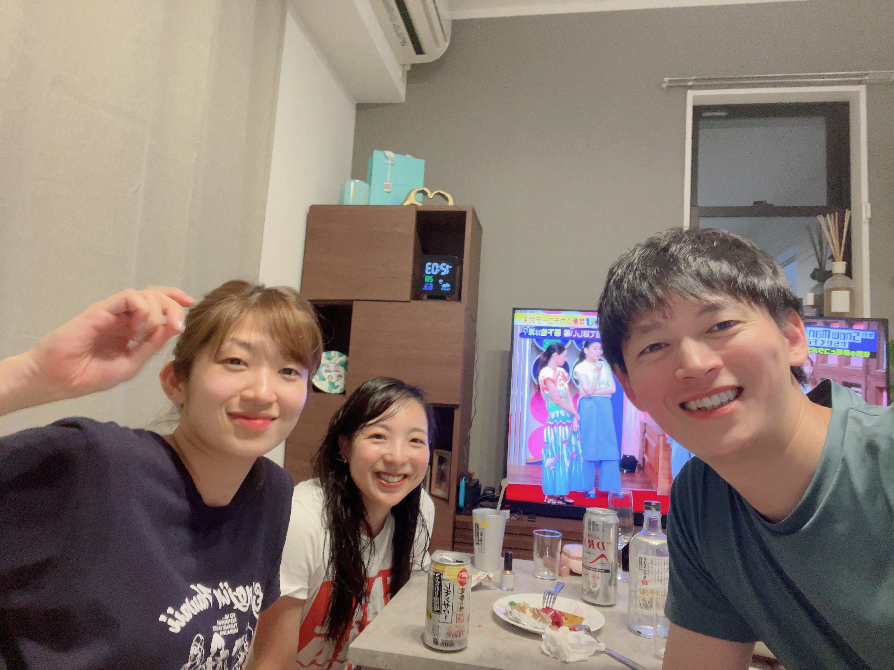
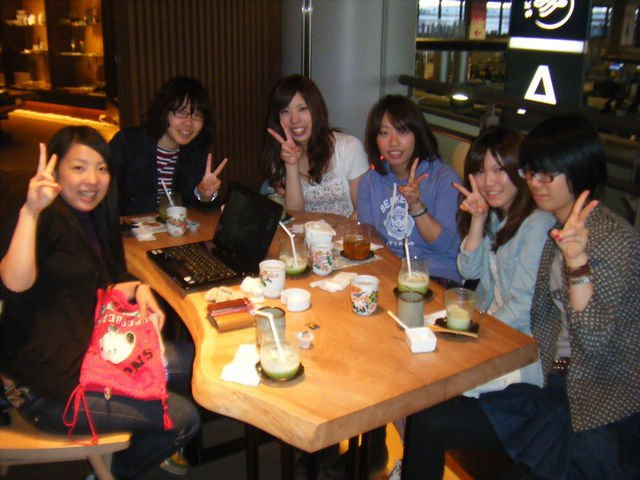
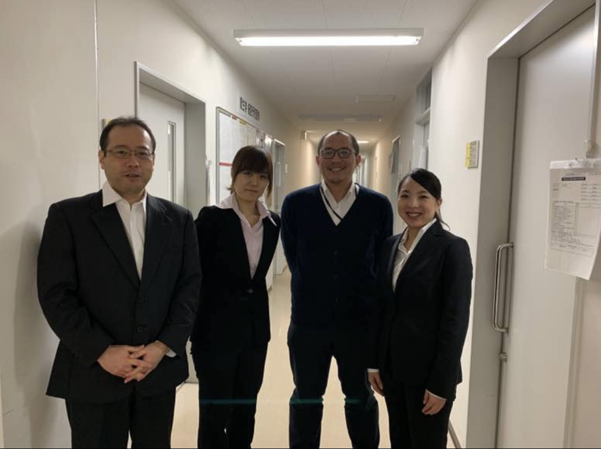
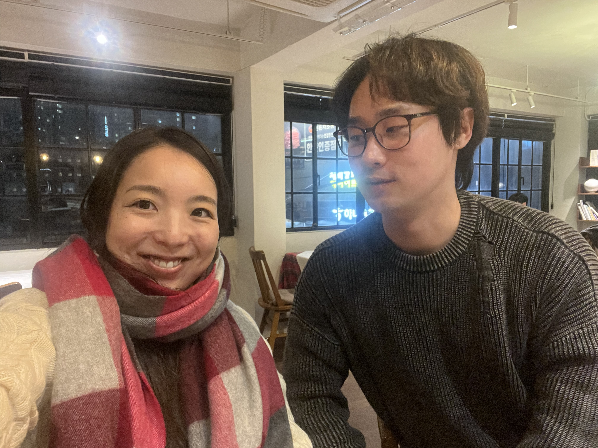
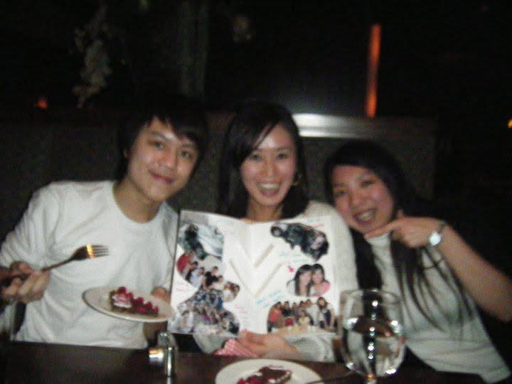
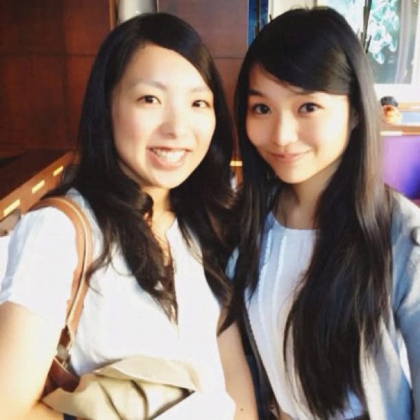
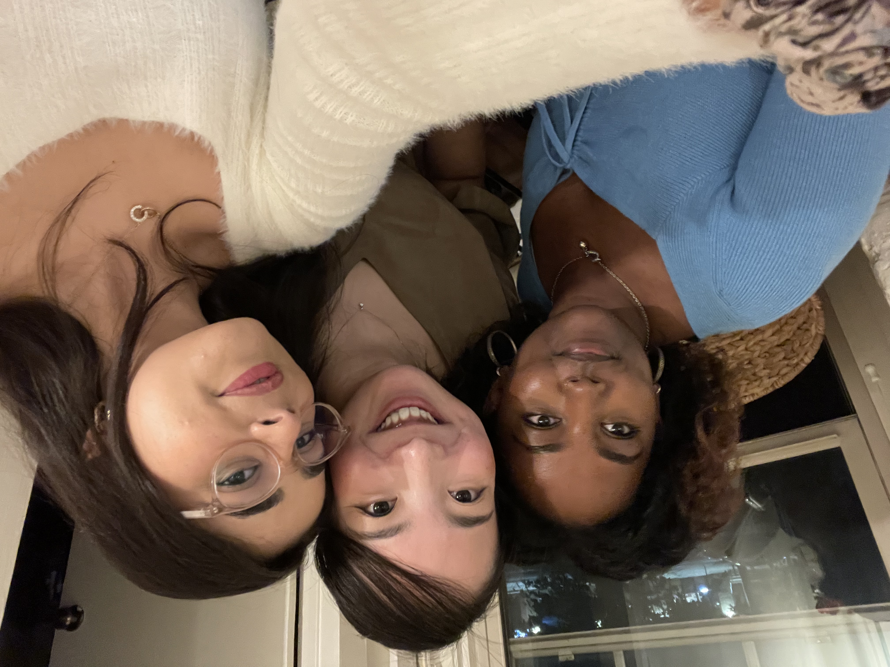
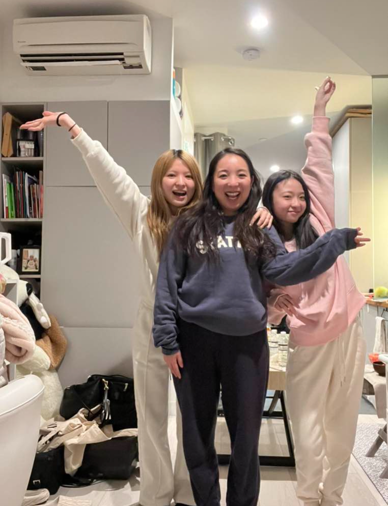

Family

Haru kun

Dake & Ojisan

Family

Dinosaur Family

Champions

New Year Family Gathering
SDF Nursing School

Army

Graduation

Shige chan & Aya

Kawaii Aya Chan
Aya & Lisa

Lisa & Manabucchi san

Airi chan & Aya
High School

Mao

Kei chan

Hatano
Hokkaido University (MPH)

Hokudai MPH booth

Defence Day

Echigoya san

Hyojung & Andrei & Sungmok
Research Community

Laura

Ito kun & Dokan kun
Vancouver

Cake from Kut Family

Bianca san

Elina san

Sangyop

Mana san & Japser

Jane

Lina
ASU

Lucero

Yilei

Salman

Mason & Tammy & Jordy R

Yong Chan
NYU

Frey

Kasturi

Neha

Saki chan

Scuba diving
×